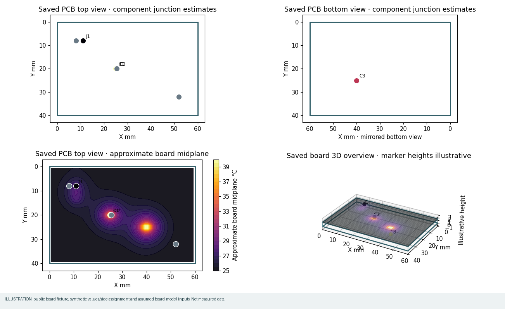
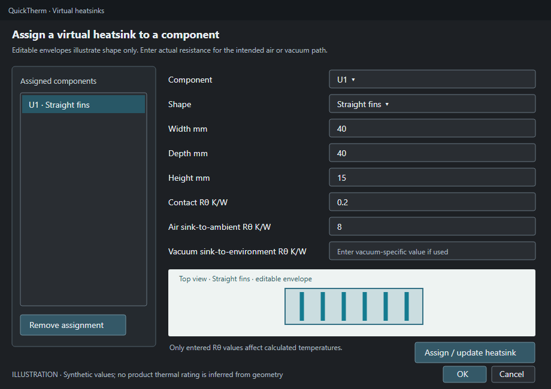

Choose WayriCAD QuickTherm from KiCad PCB Editor's plugins menu. Its thermometer icon opens a separate QuickTherm window. It reads saved PCB footprint properties and estimates steady-state junction temperatures without changing the board. The optional models add thin-sheet or layer-resolved board screening; neither is CFD or a validated transient simulation.

.kicad_pcb. QuickTherm reads the saved file, not unsaved edits.| Quantity | Example saved field | Accepted value |
|---|---|---|
| Dissipated power | Power_W | 0.5, 500mW, 0.5 W |
| Air junction-to-ambient | RthetaJA | 40 K/W |
| Junction-to-board | RthetaJB | 5 °C/W |
| Junction-to-case for a heatsink | RthetaJC | 2 K/W |
Bare power numbers mean watts; bare thermal-resistance numbers mean kelvins per watt. Power may be zero, but must be present for each selected part. Thermal resistances must be positive.
For a board without complete thermal footprint fields, leave Input source at Enter values per component. Choose air or vacuum, review ambient temperature, select only the dissipating components, then click Enter component inputs…. Enter power in W and RθJA in air, RθJB in vacuum, or RθJC for an assigned virtual heatsink, in K/W. Each selected part needs explicit valid values; nothing is inferred from the board or part number. Vacuum also needs an explicit board-to-environment path for parts without heatsinks. Run QuickTherm and inspect the table, map, coverage and assumptions. The saved PCB is unchanged, and exported HTML/JSON record the entered values.
If the board already contains complete thermal properties, choose Use saved footprint fields to reveal the mapping controls:
Power_W).If a field name is missing, add it to a footprint, save the PCB, then use Reload saved board in QuickTherm.
Check the dissipating references in the left-hand list. Select all and Clear help manage the list. Unselected heat sources are excluded. For vacuum, every selected part needs complete power and thermal-path data so a missing source cannot silently lower the shared board temperature.
Click Virtual heatsinks…, choose a reference, then select straight fins, pin fins, radial fins, flat plate, or Resistance only · no envelope. The dimensional presets are editable visual starting points, not vendor SKUs or thermal ratings. Resistance-only requires no dimensions.

Enter positive contact Rθ and an environment-specific sink-to-environment Rθ: air RθSA for air analysis and/or vacuum RθSA for vacuum analysis. Map the component's RθJC field in the main tab. Click Assign / update heatsink, then OK. Selecting an existing assignment lets you edit it; Remove assignment returns that part to its ordinary RθJA/RθJB path. Geometry affects the live sketch only; it does not create a thermal rating. An air rating cannot be reused as a vacuum rating.
Click Run QuickTherm. The default Top-side map marks top-mounted components on the saved Edge.Cuts outline. Bottom-side map mirrors the X axis and shows bottom-mounted parts. Marker colors are estimated component junction temperatures, not the board surface. Choose the separate top/bottom junction contours for bounded same-side interpolation, or the ranked chart. Blank contour regions lack support. 3D overview extrudes the saved board outline by its saved thickness and shows illustrative component markers; azimuth and elevation rotate it. It is not a STEP assembly or exact component-height model.
For an optional board heat field, expand Optional board conduction / radiation / virtual airflow model, enable it, review effective in-plane conductivity, emissivity, board and sink air speeds, and provide exposed area for each virtual sink. Map a saved Model junction-to-board RθJB field for board-cooled model junction temperatures; sink-cooled parts use their already mapped RθJC and entered contact resistance. Missing RθJB leaves a board-site temperature without a model junction temperature. Saved board thickness is read automatically. Airflow must be zero in vacuum. Top board model and Bottom board model show the same thin-sheet midplane temperatures; there is no through-thickness gradient. Choose 48 long-axis cells by default or increase to 80 for refinement; footprint heat is distributed by overlap area. Compare local temperatures at two meshes. The report records convection, radiation and heat-balance residual. Airflow coefficients are screening correlations, not CFD. The analytics strip reports min, max, mean and median solved component junction estimates, total solved power and the hottest reference. The sortable output table includes selected parts that could not be solved, with their reasons, and shows heat path, power, resistance, junction temperature, rise, optional modeled board-site and sink temperatures, and PCB X/Y. Model junction remains blank without mapped RθJB or an explicit sink path; legacy RθJA is not reused. Click a row or map marker to cross-select its exact footprint in the originating PCB Editor. Click Read PCB selection to bring an editor-selected footprint back into the table and map. Save and rerun after board edits; cross-selection rejects a stale saved board. Changing a mapped input clears old results.
Air, no heatsink: Tj = Tamb + P × RθJA. With a virtual heatsink: Tj = Tamb + P × (RθJC + Rcontact + RθSA). Vacuum board path: Tboard = Tamb + ΣPboard-path × Rboard→environment, followed by Tj = Tboard + P × RθJB. Heatsink power is excluded from the shared board-node sum; parallel case-to-board conduction is not solved.
This is steady-state finite-volume screening. It approximates package spreading, barrel heat flow, convection and gray-body radiation; it does not solve CFD, transients or electrical-temperature feedback. Whole-circuit electrothermal simulation belongs in SPIKE #1.
Install the CalculiX ccx executable. In the board-model controls choose CalculiX 3D · fixed lower face, click Locate CalculiX… and Check solver setup; the chosen path is remembered locally. Gmsh may require a first-time install in QuickTherm's private runtime. Save an explicit stackup and filled zones, select top-side heat sources, and enter or map their operating power. Enter dielectric conductivity, mesh target and fixed lower-face temperature. QuickTherm imports checked top/bottom fields and reports heat balance. RθJB is optional: without it the package junction temperature and junction-limit status remain unknown while the solved board field remains available. This mode rejects vias, mounting contacts, bottom heat sources, heatsinks, convection and radiation; see the model contract.
Use Open top + bottom workspace for simultaneous front and mirrored-back board views. Hover for coordinates, field temperature and junction estimate over a part. Click a part or summary row to cross-select it in the board views, main table and PCB Editor. Choose the optional board-temperature field or the explicitly labelled junction interpolation. Click Place probe, then a point inside the board. The probe table and report identify the sampled field; interpolated junction estimates are distinct from the optional modeled board field. Map the saved footprint properties for minimum and maximum junction temperature. The sortable component table reports PASS, FAIL or UNKNOWN for each part; missing values never silently pass.
For automation, use wayricad-therm board.kicad_pcb --config thermal-config.json --html result.html --require-limits-pass. The thermal job preset uses the same configuration and returns a failed job for failed or unknown limits. The Markdown guide includes the jobset setup command.
Export report… writes local HTML and paired JSON with top/bottom maps and contours, a 3D overview, optional board-model field and heat balance, component table, analytics, mapping, scope, heatsink definitions, coverage and assumptions. Keep both files together. After PCB edits, save and reload the board, review fields and scope, then rerun; old reports do not update automatically.
| Problem | Action |
|---|---|
| Field absent | Add the saved PCB footprint property, save and reload. |
| Part excluded | Inspect its field name, units and value in the report. |
| Vacuum run fails | Complete all selected power/path fields, board Rθ for unsinked parts and vacuum RθSA for heatsinks. |
| Shape changes but temperature does not | This is expected: dimensions are visual; entered Rθ controls the estimate. |
The lumped and thin-sheet modes omit spatial copper detail. The layered screen resolves saved copper and vertical paths approximately but still omits package spreading, detailed material anisotropy, airflow fields, temperature feedback and transients. Use a qualified thermal model or measurements for design sign-off. The Markdown guide includes a CLI walkthrough and fuller worked air/vacuum examples.
The offline report includes interactive Top, mirrored Bottom and orbitable 3D views, saved footprint bounds, Edge.Cuts, drill holes, slots and vias. Hover to probe or identify a component; click its sortable table row to highlight it. Wheel zooms, drag pans or orbits, and Fit board resets the view. The three embedded Matplotlib plots show top and bottom board overlays and component temperatures with available limits.
3D package heights are illustrative; no STEP solids are loaded. Thin-sheet top and bottom views share one midplane field. Board contact temperature is not package case temperature, and missing case temperatures remain unknown. The multilayer model supports circular and rotated obround plated slots using the saved drill shape and flashed lands; it reports coarse contact proxies.
# WayriCAD QuickTherm
QuickTherm is an independently installable KiCad PCB Editor plugin for read-only, steady-state thermal screening. It has its own PCM package, toolbar action, native window, icon, command-line interface and HTML/JSON export. It does not require Quick PI to be installed.
The separate `wayricad-therm-transient` command runs an explicitly parameterized, four-board lumped RC transient screen. It uses saved-board source hashes and KiCad reference checks, a declared fan P–Q/system operating point or prescribed-flow sensitivity case, explicit serial or parallel-passage airflow topology, optional package/body and isolated-sink paths, and ohmic R(T) loss feedback. The parallel model warms air from high X to low X within each board and retains a user-entered passage flow split; it is not CFD. See the [transient model guide](TRANSIENT_MODEL.md) for the input contract and limitations. This does not make the native board viewport a transient copper-field solver.
For the separate steady multilayer model, set `"source_refinement_factor": 2` inside `thermal_network_settings` to subdivide rectilinear cells near mapped footprint sources. A CLI JSON config can also include `"mesh_acceptance": {"grid_cells_long_axis": [24, 48, 80], "maximum_change_c": 0.1, "minimum_source_cells": 4}`. The solver repeats the same saved geometry on increasing grids and reports PASS/FAIL from the two finest component, source-peak, layer-peak and spatial-field temperatures, numerical balance and effective source-contact coverage. An optional phase-shifted solve exposes grid sensitivity. A failed or absent mesh gate must not be read as a converged local hotspot result. Source-aligned refinement is a rectilinear screening mesh; it does not resolve package-to-copper contact geometry or qualify physical hotspots.
Start with the [step-by-step user guide](QUICK_THERM_USER_GUIDE.md) or its [offline HTML version](QUICK_THERM_USER_GUIDE.html). The [model and limits](QUICK_THERM.md) explain the equations and supported evidence.
The optional [CalculiX 3D steady-conduction mode](CALCULIX_BRIDGE.md) meshes a supported saved board with Gmsh, runs `ccx`, checks its nodal temperatures and heat balance, and displays imported top/bottom board fields. Select it in the native board-model controls, locate the `ccx` executable, and check the solver setup before running; the executable choice is remembered locally. First use may install Gmsh in QuickTherm's private runtime. Enter or map dissipated power for the selected parts; RθJB is optional and is used only to estimate package junction temperature from the solved board field. The mode requires a fixed lower-face temperature and rejects vias, mounting contacts, heatsinks, convection and radiation until those physics have a qualified mesh contract.


The paired-workspace screenshot was captured from the native KiCad Python window using a synthetic 60 × 40 mm board outline, two invented components and illustrative layer-temperature arrays. It demonstrates the UI only; the temperatures are not measured or solver-qualified results.
The **Open top + bottom workspace** button opens simultaneous front and mirrored-back thermal views with a live cursor readout, probe placement and a component summary that cross-selects with the plots and PCB Editor. Top and bottom maps display labelled component junction estimates with a translucent, same-side interpolation where enough mapped points exist. The optional board conduction model provides an approximate board-temperature overlay; it needs material, airflow and boundary inputs. The first expanded map above is **not** a computed board-surface temperature. The second view is the optional thin-sheet model, using an assumed 35 W/(m·K) in-plane conductivity, 0.8 emissivity, 10 m/s forced airflow, a 48-cell long-axis grid and the saved 1.6 mm thickness. Those inputs are illustrative, not measured properties of the fixture.
The [component-results screenshot](examples/quicktherm-native-results.png) shows the sortable temperature table and summary in the same native window.
Open a saved board in KiCad PCB Editor and launch **WayriCAD QuickTherm**. Choose only the dissipating components, review the ambient temperature, then use **Enter component inputs…** to supply power and the applicable thermal resistance for each selected part. No saved `Power_W` or `RthetaJA` fields are required for this path, and the PCB is not modified. If your board has complete thermal properties, switch to **Use saved footprint fields** and map them. Both paths show top and bottom views, contours, a 3D overview, a component temperature table, and cross-selection back to PCB Editor. Optional virtual heatsinks and board models include thin-sheet and layer-resolved copper/vertical-path approximations. The report records input provenance, assumptions, coverage and heat balance where applicable. The viewport board models remain steady-state; the separate transient CLI is a lumped RC screen, not CFD or a spatial transient copper-field solver.
For automation, install the source wheel and use `wayricad-therm`:
```text wayricad-therm C:/Projects/Example/board.kicad_pcb --environment air --power-field Power_W --theta-ja-field RthetaJA --thermal-refs U1 U2 --html quicktherm-air.html ```
### Reproducible example
The public [demonstration PCB](examples/thermal-demo.kicad_pcb) has four hypothetical dissipating parts spread across a 60 × 40 mm board. From the repository root with KiCad 10 native Python and the declared dependencies available:
```text python -m quick_therm_plugin.cli quick_therm_plugin/examples/thermal-demo.kicad_pcb --environment air --power-field Power_W --theta-ja-field RthetaJA --thermal-refs C1 C2 C3 J1 --ambient 20 --html quicktherm-demo.html ```
The actual run produced the [JSON summary](examples/thermal-demo-result.json) and [self-contained HTML report](examples/thermal-demo-report.html). The result was generated with KiCad 10.0.6 on Windows; the public example files use relative paths.
| Part | Power | Supplied RθJA | Estimated junction at 20 °C ambient | |---|---:|---:|---:| | C1 | 0.20 W | 45 K/W | 29.0 °C | | C2 | 0.45 W | 35 K/W | 35.75 °C | | C3 | 0.10 W | 65 K/W | 26.5 °C | | J1 | 0.30 W | 50 K/W | 35.0 °C |
These are independent `ambient + power × RθJA` estimates. The sample board is a visual fixture with hypothetical fields and repositioned parts, not a routed design or thermal qualification. To regenerate it from the repository fixture, run `examples/build_demo.py`, then run the command above. The example report contains board views and assumptions; the JSON summary is a small subset of the full report evidence.
For the board-model view and automatic limits, use the reviewed [example configuration](examples/thermal-demo-config.json):
```text wayricad-therm quick_therm_plugin/examples/thermal-demo.kicad_pcb --config quick_therm_plugin/examples/thermal-demo-config.json --html quicktherm-demo.html --require-limits-pass ```
The saved example converged with 1.05 W input and a heat-balance residual below 10⁻¹² W. The resulting board-midplane range is about 23.6–27.6 °C, with four component limits passing and two virtual probes recorded. This is a model output under the declared forced-air assumption, not a measurement. The displayed `Tj≈` labels in the board-model view come from the model and mapped `RthetaJB` fields; the simpler table above uses the separate `RthetaJA` screen.
The PCM action uses the native KiCad Python runtime and launches a separate bounded worker for board analysis. Each installed QuickTherm ZIP carries its own shared runtime files, so it never imports a sibling plugin package.
### Inspecting the saved board in a thermal report
The offline HTML report opens with an interactive full-board viewport. **Top** and **Bottom** show the corresponding saved footprint bounds, reference labels, Edge.Cuts, mounting drills, slots and vias; the bottom view is mirrored. Enable **All reference labels**, hover a part, or select its row in the sortable component table to identify it. Wheel zooms, drag pans, and **Fit board** resets the view. Hover exposed board space to read the nearest valid thermal field cell. Drilled voids and space outside the saved outline have no probe temperature.
**3D overview** provides an orbitable board extrusion and saved footprint bounds on both faces. Package heights are illustrative and no STEP models are loaded. The report also embeds three offline Matplotlib plots: top board overlay, bottom board overlay and component temperature comparison with available limits. Junction, package case and board contact temperatures are separate quantities; a missing case temperature stays unknown. A thin-sheet solve supplies one shared midplane field on both faces, not independently calculated top and bottom surface temperatures. Drilled slots can be displayed even when the multilayer thermal-contact model does not support solving them.